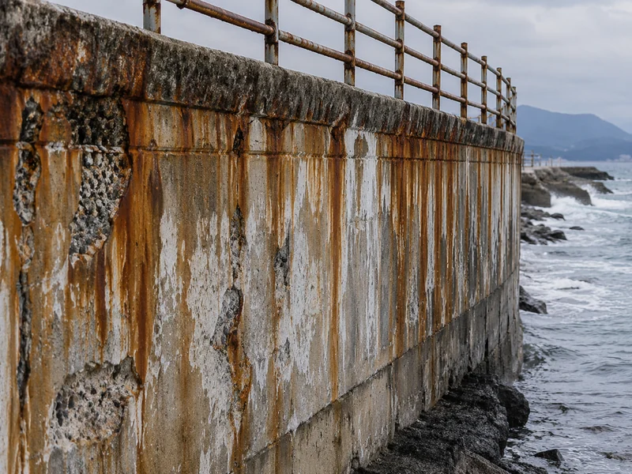

ARCHIVE
제주 해안지역 콘크리트 염해·철근부식·박락의 원인과 보수공법 선정
해안 구조물의 박락은 떨어진 자리를 메워서 끝나지 않습니다. 염화물 침투에서 철근부식, 팽창, 균열·들뜸·박락으로 이어지는 과정을 먼저 확인하고, 손상 범위와 구조적 중요도에 따라 단면복구와 구조보강을 구분하는 판단 순서를 정리했습니다.

핵심 원칙 — 콘크리트 박락은 떨어져 나간 부분을 모르타르로 메우는 문제가 아닙니다. 염화물 침투나 철근부식 등 열화 원인을 먼저 확인하고, 손상 범위와 구조부재의 중요도에 따라 보수로 끝낼지 구조보강까지 갈지를 결정합니다.
1. 제주 해안지역에서 콘크리트가 열화하는 순서
제주는 해풍과 높은 습도, 반복되는 습윤·건조로 염해에 노출되기 쉬운 환경입니다. 해안 구조물에서 관찰되는 대표적인 진행 과정은 다음과 같습니다.
- 해풍 등에 포함된 염화물이 콘크리트 내부로 침투
- 철근 표면의 부동태 피막 파괴
- 철근 부식 진행
- 부식생성물의 팽창으로 철근 주변 압력 증가
- 피복 콘크리트의 균열과 들뜸 발생
- 콘크리트 박락과 철근 노출
중성화가 함께 진행되는 구간에서는 철근부식 위험이 더 커질 수 있습니다. 겉으로 드러난 박락은 이 과정의 결과이지 시작이 아니므로, 원인을 남겨 둔 채 표면만 회복하면 같은 자리가 다시 부풀어 오릅니다.
2. 박락이 확인되면 함께 조사하는 항목
육안으로 보이는 박락부만 보고 보수범위를 정하지 않습니다. 다음 항목을 함께 확인합니다.
- 균열의 위치와 형태
- 타음(타진)으로 확인한 들뜸 범위
- 철근 노출 및 부식 상태
- 철근 단면 감소 여부
- 콘크리트 피복두께
- 누수 등 지속적인 수분 공급 여부
- 염화물 침투 가능성
- 중성화 깊이
- 해당 부재의 구조적 역할과 중요도
필요한 경우 철근탐사, 초음파, 반발경도, 자연전위, 염화물량 시험 등 비파괴·재료시험을 전문기관과 연계하여 진행할 수 있습니다.
3. 단면복구의 기본 순서
열화부 제거 → 철근 처리 → 단면복구 → 필요 시 균열보수 → 표면보호 가 기본 흐름입니다.
3-1. 열화 콘크리트 제거
들뜸과 박락 부위를 건전한 콘크리트가 나올 때까지 제거합니다. 철근 부식이 진행된 경우에는 철근 주변, 필요하면 철근 배면까지 작업하여 부식 상태를 확인할 수 있도록 합니다.
3-2. 철근 녹 제거 및 방청처리
철근 표면의 들뜬 녹과 부식물을 제거한 뒤, 철근 상태에 맞는 방청·부식억제 처리를 실시합니다. 철근의 단면손실이 큰 경우에는 방청처리만으로 마무리하지 않고 구조적 검토를 거칩니다.
3-3. 단면복구 모르타르 시공
기존 콘크리트와의 부착성, 수축저항성, 내구성을 고려한 보수 모르타르를 사용합니다. 해안지역에서는 염화물 침투저항성과 투수저항성 등 장기 내구성 항목을 함께 검토합니다.
보수재료의 부착 성능은 KS F 2762(콘크리트 보수재료의 접착강도 시험방법) 등에 따른 시험자료로 확인합니다. 요구 수준은 현장 조건과 공사시방서에 따라 정해지므로, 특정 수치를 모든 현장의 의무 기준처럼 적용하지 않습니다.
3-4. 표면보호
염해가 계속되는 환경에서는 단면복구 후 표면에 염화물과 수분의 침투를 저감하기 위한 보호재 적용을 검토합니다. KS F 4936(콘크리트 보호용 도막재) 등 관련 기준과 제품 시험성능을 확인해 선정합니다.
표면보호는 원인을 제거한 뒤에 적용하는 마지막 공정이며, 진행 중인 부식을 덮어 해결하는 재료가 아닙니다.
4. 균열이 함께 있는 경우
균열은 폭보다 원인과 거동 여부를 먼저 판단합니다.
- 비활성 구조균열 — 에폭시 주입 검토
- 누수균열 — 누수 조건에 적합한 주입재 검토
- 움직임이 지속되는 균열 — 단순 에폭시 주입만으로 처리하지 않고 원인 해소를 먼저 검토
콘크리트 구조물 보수용 에폭시는 KS F 4923(콘크리트 구조물 보수용 에폭시 수지) 등 관련 기준과 제품 시험성적을 확인합니다.
5. 언제 CFRP 등 구조보강을 검토하는가
박락이 발생했다는 이유만으로 탄소섬유시트를 적용하는 것은 적절하지 않습니다. 다음과 같은 경우에 구조적 검토가 필요합니다.
- 철근 단면손실이 큰 경우
- 구조적 균열이 의심되는 경우
- 처짐이나 변형이 확인되는 경우
- 보·기둥·슬래브 등 주요 구조부재의 손상이 광범위한 경우
- 단면복구만으로 요구 내하력을 확보하기 어려운 경우
구조보강이 필요하다고 판단되면 구조검토와 설계 결과에 따라 탄소섬유시트(CFRP) 보강, 강판보강, 단면증설, 철근 보강 또는 교체 등을 검토합니다.
보강량, 보강 방향, 정착길이, 보강 범위는 구조검토와 구조설계에 의해 결정됩니다. 현장에서 공법을 먼저 정해 놓고 설계를 맞추지 않습니다.
6. 기술자료와 AI 활용의 범위
ainconcrete는 콘크리트 진단장비를 직접 운용한다고 표현하지 않습니다. 현재 AI를 활용하는 범위는 다음과 같습니다.
- 현장사진과 손상정보 정리
- 콘크리트 열화 유형 분류
- 관련 KS·KDS·KCS 및 제조사 기술자료 분석
- 보수공법 후보와 자재 성능·시공조건 비교
- 시공사례 및 유지관리 이력 데이터 축적
비파괴진단은 전문기관과의 협업으로 진행하며, 축적한 데이터를 보수공법 선정 근거로 활용하는 방향으로 확대해 나가고 있습니다.
7. 정리
제주 해안지역의 콘크리트 보수는 박락 부위를 메우는 작업으로 끝나서는 안 됩니다. 염해, 중성화, 수분침투, 철근부식 등 손상 원인을 먼저 파악하고 열화부 제거 → 철근 처리 → 단면복구 → 필요 시 균열보수 → 표면보호 순서로 접근하는 것이 기본입니다. 구조적 성능이 부족하다고 판단되는 경우에만 구조검토를 거쳐 보강 범위를 결정합니다.
8. 참고 기준
- KS F 4923 — 콘크리트 구조물 보수용 에폭시 수지
- KS F 4936 — 콘크리트 보호용 도막재
- KS F 2762 — 콘크리트 보수재료의 접착강도 시험방법
- KDS 콘크리트구조 내구성 및 보수·보강 관련 기준
- KCS 콘크리트 구조물 보수공사 관련 시방
표준은 개정될 수 있으므로 인용 시 국가건설기준센터와 e나라 표준인증에서 최신본을 확인합니다. 이 문서는 현장 판단을 위한 기술자료이며, 모든 현장에 같은 공법을 일률적으로 적용하기 위한 표준시방서가 아닙니다.
9. 함께 보면 좋은 자료
제주 해안환경의 조사 항목은 제주 해안지역 콘크리트 염해와 철근부식 보수에, 철근 녹 제거와 단면복구의 세부 공정은 철근부식 및 콘크리트 박락 보수공법에 정리했습니다. 공법 사이의 판단 순서는 우레탄 · 에폭시 · 탄소섬유 선정 흐름, 보강 자체는 탄소섬유시트(CFRP) 구조보강에서 다룹니다. 현장 시공 범위는 콘크리트 보수보강을 참고하십시오.